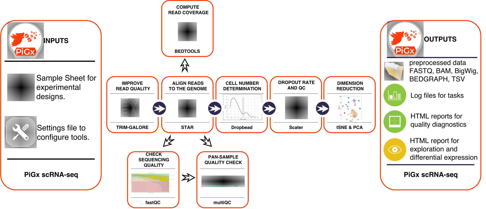

PiGx scRNA-seq
Introduction
PiGX scRNAseq is an analysis pipeline for preprocessing and quality control for single cell RNA sequencing experiments. The inputs are read files from the sequencing experiment, and a configuration file which describes the experiment. It produces processed files for downstream analysis and interactive quality reports. The pipeline is designed to work with UMI based methods. It currently supports all methods which output paired adapter - read files. The pipeline was heavily influenced by the Dropseq pipeline from the McCaroll lab.
Workflow
- Quality control reads using fastQC and multiQC
- Automatically determines the appropriate cell number
- Constructs the digital gene expression matrix
- Calculates per sample and per cell statistics
- Prepares a quality control report
- Normalizes data and does dimensionallity reduction
 Figure 1: An overview of the PiGx scRNA-seq workflow
Installation
You can install this pipeline and all of its dependencies through GNU Guix:
guix package -i pigx-scrnaseq
You can also install it manually from source. You can find the latest release here. PiGx uses the GNU build system. Please make sure that all required dependencies are installed and then follow these steps after unpacking the latest release tarball:
./configure \
--prefix=/some/where \
DROPSEQJAR=/path/to/dropseq.jar \
PICARDJAR=/path/to/picard.jar
make install
Via Conda
- Download pigx_scrnaseq source code
- run:
- run:
- Download and install Anaconda from https://www.anaconda.com/download
- Locate the 'environment.yml' file in the source code.
- run:
conda env create -f environment.yml #provide path to the environment.yml file
- activate the environment:
source activate pigx_scrnaseq
- run:
Via Guix
Assuming you have Guix installed, the following command spawns a sub-shell in which all dependencies are available:
guix environment -l guix.scm
If you do not use one of these package managers, you will need to ensure that the following software is installed:
Software dependencies
Dependencies
By default the configure script expects tools to be in a directory
listed in the PATH environment variable. If the tools are installed
in a location that is not on the PATH you can tell the configure
script about them with variables. Run ./configure --help for a list
of all variables and options.
You can prepare a suitable environment with Conda or with GNU Guix.
The pipeline currently depends on two external java programs, which can be found on the following links:
During the configure step path to the .jar files needs to be provided.
Quick Start
To check wether the pipeline was properly installed, run PiGx scRNAseq on a minimal test dataset, which can be found on the following link Once downloaded run these commands to extract the data:
mkdir test_dir
tar -xzf test_data.tar.gz --directory test_dir/
cd test_dir
The tarball includes a settings file and a sample sheet file. The pipeline can now be started with the following command:
pigx scrnaseq -s test_dir/settings.yaml test_dir/sample_sheet.csv
The output of the pipeline is located inside test_dir/out directory.
The scRNA-Seq.report.html inside the Mapped directory gives a general overview about the single cell experiments.
Preparing Input
To run the pipeline, the user must supply
a sample sheet
a settings file
both files are described below.
To generate template sample_sheet.csv and settings.yaml files, in your current directory, type the following command
in the shell:
pigx scrnaseq --init
Sample Sheet
The sample sheet is a tabular file describing the experiment. The table has the following columns:
| name | reads1 | reads2 | library | covariate1 | covariate2 |
|---|---|---|---|---|---|
- name - name for the sample, which will be used to label the sample in all downstream analysis
- reads1 - fastq file containing the adapter sequences
- reads2 - fastq file containing the sequenced reads
- location of these files is specified in
settings.yaml
- location of these files is specified in
- library - sequencing platform on which the experiment was performed (i.e. dropseq)
- covariates - variables which describe the samples. For example: replicate, time, hour post infection, tissue ...
Additional columns may be included which may be used as covariates in the differential expression analysis (sex, age, different treatments).
Settings File
The settings file is a YAML file which specifies:
- Locations:
- The locations of the reads (directory where
fastqfiles are located) - The location of the output directory
- The location of the
fastafile with the reference genome (must be prepared by the user) - The location of a
GTFfile with genome annotations
- The locations of the reads (directory where
Genome assembly name (i.e. mm10)
covariates
In order to get started, enter pigx-scrnaseq --init-settings my_settings.yaml. This will create a file called my_settings.yaml with the default structure. The file will look like this:
locations:
output-dir: out/
reads-dir: sample_data/reads/
tempdir:
covariates: 'covariate1, covariate2, ...'
annotation:
primary:
genome:
name: hg19
fasta: sample_data/genome.fa
gtf: sample_data/genome.gtf
execution:
submit-to-cluster: no
jobs: 6
nice: 19
Running the pipeline
To run PiGx on your experimental data, first prepare the sample sheet and settings file (see above), and then from the terminal type
$ pigx-scrnaseq -s settings.yaml sample_sheet.csv
If you are not sure wether you set everything up correctly, use the dryrun option which will only show what work would be performed, but does not actually run the pipeline.
$ pigx-scrnaseq -s settings.yaml sample_sheet.csv -n
To see all available options type the --help option
Output Description
PiGx scRNA-seq creates an output folder, with a specific directory structure (for details see here), with the following results:
- bam files
- bigwig files
- UMI and read count matrices
- Quality control report
- SingleCellExperiment object with pre-calculated statistics and dimensionallity reductions
Output Folder Structure
The output directory structure has the following structure:
|-- Annotation
| `-- genome_name (i.e. mm10)
| `-- STAR_INDEX
|-- Log
|-- Mapped
| |-- Sample_1
| | `-- genome_name
| |-- Sample_2
| | `-- genome_name
| |-- Sample_3
| | `-- genome_name
| `-- Sample_4
| `-- genome_name
Annotation
Contains pre-processed fasta and gtf file, along with the STAR genome index. The genome fasta file is processed into a dict header. The gtf file has gene_names replaced with gene_id.
Important: We sincerely advise that you check that the gtf file corresponds to the same organism and genome version as the genome fasta files. The chromosome names have to completely correspond between the two files.
We encourage users to use both the genome annotation and the fasta file from the ENSEMBL database.
Log
Contains execution logs for every step of the pipeline.
Mapped
The Mapped folder contains per sample processed single cell samples. Additionally, it contains a loom file with merged expression values from all experiments, an RDS file with a saved SingleCellExperiment object, and a quality control report in the html format.
Sample output description
Analaysis results for each sample are done in a separate subdirectory under Mapped. Structure of analysis results:
|-- Sample1.fastq.bam
|-- Sample1_1_fastqc.html
|-- Sample1_1_fastqc.zip
|-- Sample1_2_fastqc.html
|-- Sample1_2_fastqc.zip
|-- genome_name
| |-- adapter_trimming_report.txt
| |-- Sample1_genome_name.bw
| |-- Sample1_genome_name.m.bw
| |-- Sample1_genome_name.p.bw
| |-- Sample1_genome_name_BAMTagHistogram.txt
| |-- Sample1_genome_name_DownstreamStatistics.txt
| |-- Sample1_genome_name_READS.Matrix.txt
| |-- Sample1_genome_name_ReadCutoff.png
| |-- Sample1_genome_name_ReadCutoff.yaml
| |-- Sample1_genome_name_ReadStatistics.txt
| |-- Sample1_genome_name_Summary.txt
| |-- Sample1_genome_name_UMI.Matrix.loom
| |-- Sample1_genome_name_UMI.Matrix.txt
| |-- polyA_trimming_report.txt
| |-- star.Log.final.out
| |-- star.Log.out
| |-- star.Log.progress.out
| |-- star.SJ.out.tab
| |-- star_gene_exon_tagged.bai
| |-- star_gene_exon_tagged.bam
| |-- unaligned_tagged_Cellular.bam_summary.txt
| `-- unaligned_tagged_Molecular.bam_summary.txt
Sample1.fastq.bam - contains merged barcode and sequence fq files
Sample1_genome_name.bw - bigWig file constructed from selected cells. Files with m/p.bw contain strand separated signal
Sample1genome_nameBAMTagHistogram - Number of reads in coressponding to each cell barcode.
Sample1_genome_name_UMI.Matrix.txt/loom - UMI based digital expression matrix in txt and loom format
Sample1_genome_name_READS.Matrix.txt - Read count digital expression matrix
Sample1_genome_name_ReadCutoff.yaml - contains the UMI threshold for selecting high quality cells (obtained using dropbead). The corresponding .png file visualizes the UMI curve and the threshold.
star_gene_exon_tagged.bam - mapped and annotated reads. Each read is tagged by annotation based on it's mapping location.
Sample1genome_nameReadStatistics/Downstream.txt - quality control statistics used in the html report. They contain values such as number of reads in Exons/Introns.
Downstream analysis
The combined expression data are subsequently processed into a SingleCellExperiment object. SingleCellExperiment is a Bioconductor class for storing expression values, along with the cell, and gene data, and experimental meta data in a single container. It is constructed on top of hdf5 file based arrays (Pagès 2017), which enables exploration even on systems with limited memory capacity. During the object construction, the pipeline performs expression normalization, dimensionallity reduction, identification of significantly variable genes, assigns the cells to the steps of the cell cycle, and calculates the quality statistics. The SingleCellExperiment object contains all of the necessary data needed for further exploration. The object connects the pigx-pipeline with the Bioconductor single cell computing environment, and enables integration with state of the art statistical, and machine learning mehods (scran, zinbwave, netSmooth, iSEE.
Execution on a cluster
Currently, PiGx only supports Sun Grid Engine for cluster execution. If you're uncertain about your cluster, try typing qsub in the shell (Sun Grid Engine uses qsub to submit jobs).
Disappearing jobs on the cluster
PiGx scRNA-seq comes with sensible defaults for resource requests when running on a cluster, but based on the genome version and other parameters, these might not be sufficient and your cluster might terminate your jobs. The cluster resource requests may be overridden in the settings file. See the execution section of the settings file created with pigx scrnaseq --init=settings.
FAQ
Q: I get the following error:
Error: Directory cannot be locked. Please make sure that no other Snakemake process is trying to create the same files in the following directory:
/home/agosdsc/projects/pigx_scrnaseq/test_dir/out
If you are sure that no other instances of snakemake are running on this directory, the remaining lock was likely caused by a kill signal or a power loss. It can be removed with the --unlock argument.
What happend and what should I do?
A: The pipeline crashed at some point, possible reasons are mentioned by the error. Do as the error message proposes and pass the --unlock argument once and then run the pipeline again without --unlock.
Questions
If you have further questions please e-mail: pigx@googlegroups.com or use the web form to ask questions https://groups.google.com/forum/#!forum/pigx/